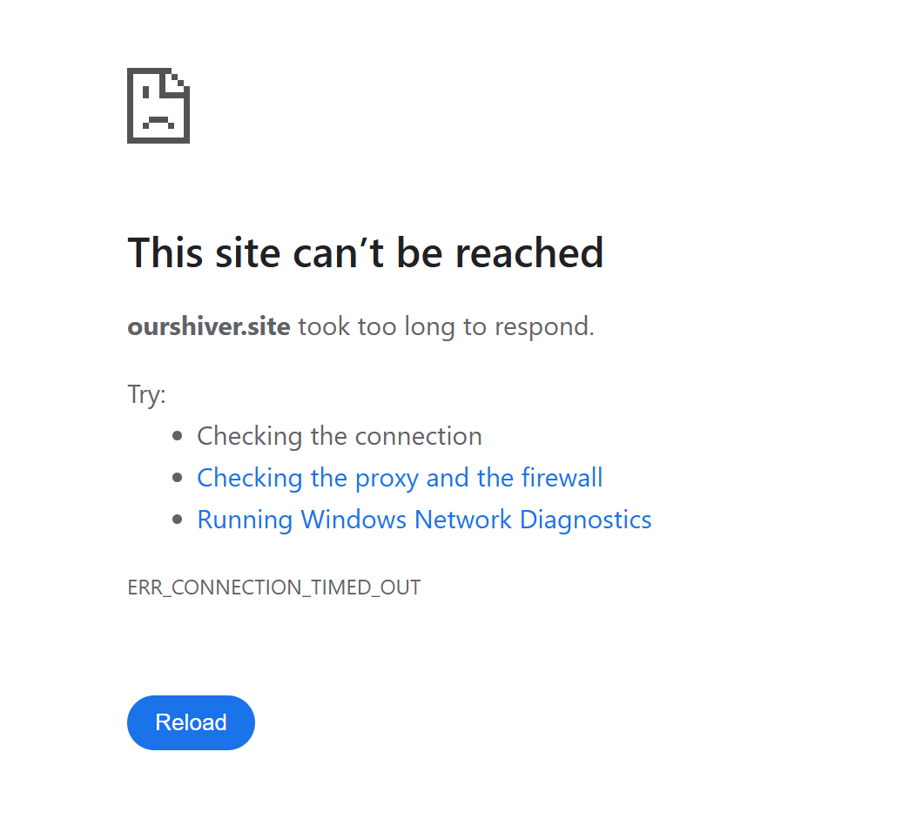

CT120 Project 5: "Our Shiver"
During our talk I learned a lot of new things about web servers. When I first think of servers, I think of data servers that use up a lot of water, and in same cases emmit a "humming" sound that can be heard by people that leave near them. Beacuse of this initial idea I had, the concept of a solar powered web server that "shakes off what isn't needed", was so interesting to me.
After listening to Carrie Hott, I went to investigate some more about the project and saw it linked on her portfolio. Unfortunately when I tried visitng the site it didn't load, probably because it is no longer displayed at The Lab.
